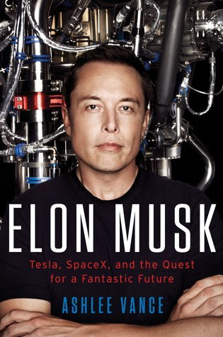

- He respects people who continue on after being told no.
- "If we can solve sustainable energy and be well on our way to become a multi-planetary species with a self-sustaining civilization on another planet—to cope with a worst-case scenario happening and extinguishing human consciousness—then."
- For Elon, the word 'no' does not exist, and he expects that attitude from everyone around him.
- Musk also began to hone his trademark style of entering an ultracomplex business and not letting the fact that he knew very little about the industry's nuances bother him in the slightest.
- What Musk would not tolerate were excuses or the lack of a clear plan of attack.
- "The longer you wait to fire someone, the longer it has been since you should have fired them."
- That ability to stay focused in the midst of a crisis stands as one of Musk's main advantages over competitors.
- "Their decisions go bad. Elon gets hyperrational. He's still able to make very clear, long-term decisions. The harder it gets, the better he gets."
- He's built an engineering army by having the pick of just about anyone in the business that SpaceX wants.
- He cares less about whether or not the person gets the answer than about how they describe the problem and their approach to solving it.
- The equipment at SpaceX tends to be built out of readily available consumer electronics as opposed to "space-grade" equipment used by others in the industry.
- Musk taps into the stores of knowledge of brilliant engineers and learns a lot by grilling them.
- "I've certainly always been optimistic on time frames."
- "In order to achieve the external promised schedule, you've got to have an internal schedule that's more aggressive than that."
- The guiding principle at SpaceX is to embrace your work and get stuff done.
- The absolute worst thing one can do is to inform Musk that what he's asking is impossible.
- Musk is a hardline negotiator.
- There would be no Tesla to talk about today were it not for Musk's money, marketing savvy, chicanery, engineering smarts, and indomitable spirit.
- Elon's mind was always way beyond the present moment.
- He would generally be positive but constructive.
- Musk never writes anything down; he held all the alterations in his head.
- You did what Musk asked or were prepared to burrow down into the properties of materials to explain why something could not be done. He often said, "Take it down to the physics."
- Musk is very visual and can store things that others have deemed to look good away in his brain for recall at any time.
- Either you're trying to make something spectacular with no compromises, or you're not. And if you're not, Musk considers you a failure.
- What separated Tesla from the competition was the willingness to charge after its vision without compromise, a complete commitment to execute to Musk's standards.
- Elon's worst trait is a complete lack of loyalty or human connection.
- People who worked for him were like ammunition: used for a specific purpose until exhausted and discarded.
- He sees man as self-limiting and in peril and wants to fix the situation.
- The perceived lack of emotion is a symptom of Musk sometimes feeling like he's the only one who grasps the urgency of his mission.
- The hot-selling Model 3 would certify Musk as that rare being able to rethink an industry, read consumers, and execute.
- He's willing to suffer some personal cost, and I think that makes his odds actually pretty good.
- The objective of a startup should be what delivers fundamental value. It's important to look at things from a standpoint of what is actually best for the economy.
- Public company stocks, particularly if big step changes in technology are involved, go through extreme volatility, both for reasons of internal execution and for reasons that have nothing to do with anything except the economy.